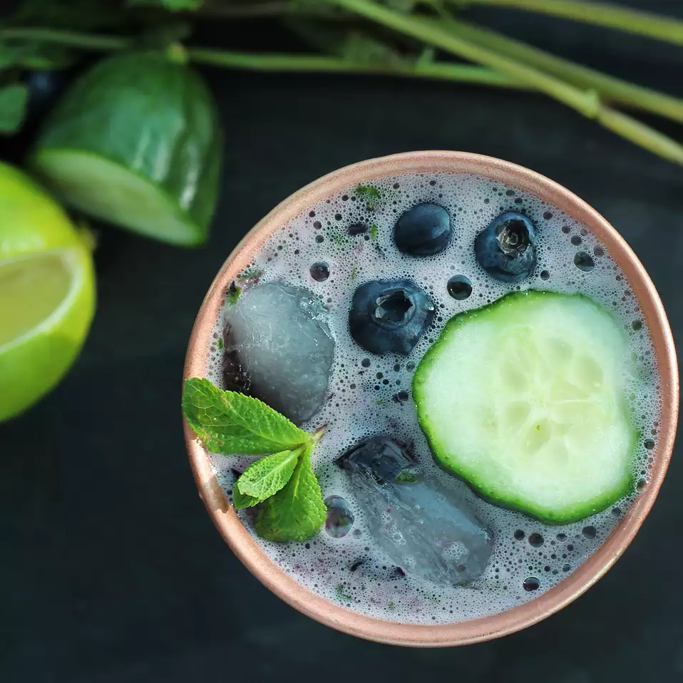

Summertime Mule

Description
Vodka and ginger beer mingle with summery flavors for a crisp and refreshing cocktail to enjoy on hot days. This pairs nicely with crunchy raw veggies for an aperitivo outdoors.
Ingredients
- ice, divided
- 5 fresh mint leaves
- ½ (3 inch) piece English cucumber, diced
- ¼ cup fresh blueberries
- ½ lime, cut into 2 wedges
- 2 fluid ounces vodka (such as Tito's®)
- ½ cup ginger beer (such as Fentimans)
- 3 fresh blueberries
- 2 fresh mint leaves
- 1 slice cucumber
Steps
- Fill a copper cup or mug with ice.
- Muddle mint leaves in a cocktail shaker until crushed. Add diced cucumber, blueberries, and 2 lime wedges. Muddle until cucumber and blueberries are crushed and limes have been juiced. Add more ice and vodka. Cover the shaker and shake until the outside has frosted.
- Strain the cocktail into the iced cup, top with ginger beer, and garnish with 3 blueberries, 2 mint leaves, and a slice of cucumber.